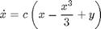
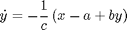
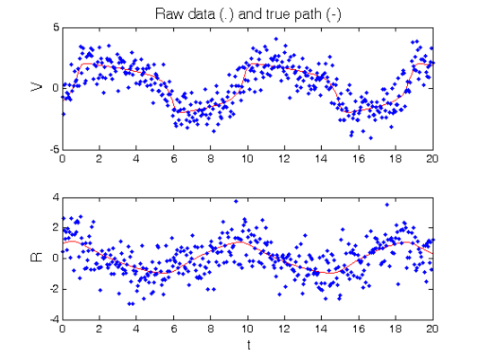
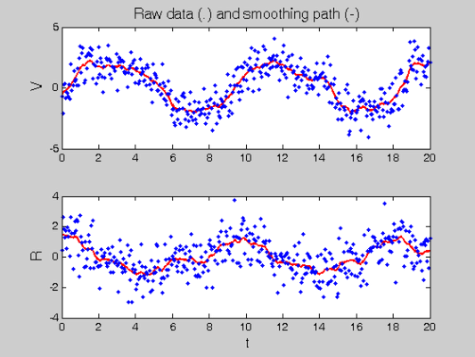
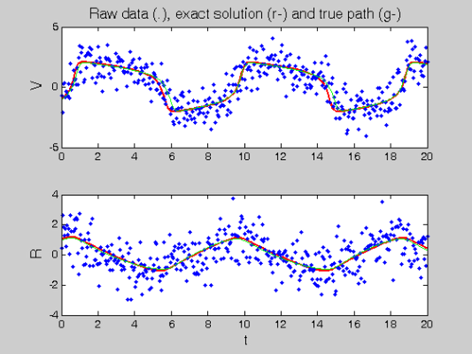
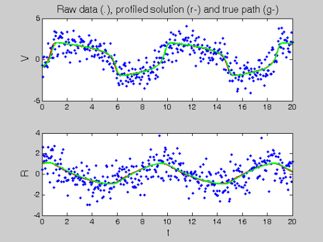
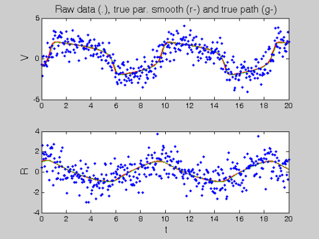

Demonstration of Profiled Estimation of Differential Equations
Contents
- The FitzHugh-Nagumo Equations
- RHS Functions
- Various Parameters
- Observation times
- Calculate trajectories
- Set up observations
- Fitting parameters
- Profiling optimisation control
- Setting up Functional Data Objects
- Smooth the data
- Re-smoothing with model-based penalty
- Perform the Profiled Estimation
- Comparison with Smooth Using True Parameters
- Calculate Sample Information and Variance-Covariance Matrices
The FitzHugh-Nagumo Equations
This page provides a detailed description of the MATLAB calculations necessary to run the profiling estimation code for differential equations.
For further technical detail, please refer to the Profile_Users_Manual; available as a .pdf file in the code directory.
The FitzHugh-Nagumo equations, as used in this example are given by


We need to define define functions that will calculate this function and its derivatives.
% First, in order to set up Monte Carlo data, we need a function to put % into the ode solver. odefn = @fhnfunode; % Function for ODE solver (exact)
RHS Functions
Next, we require functions to evaluate the FitzHugh-Nagumo equations and their derivatives. These should accept the following as arguments:
- a set of time points at which the functions are to be evaluate
- a cell array of functional data objects representing the current estimated trajectory of the system
- a vector of parameters that will be estimated
Each function should return a cell array of values each element of which should contain a vector of values giving the derivative of a function in the system at the time points t.
The array dimensions should always be ordered as: components of the system, derivatives with respect to components of the system, derivatives with respect to parameters.
These functions should all be collated into a single struct, which will be labelled fn with the fields given below.
The following functions are all given in the FhN subdirectory of the profiling code.
% First we need a function to calculate the functionl directly. fn.fn = @fhnfun; % RHS function % Now derivatives of the function with respect to system components and % parameters fn.dfdx = @fhndfdx; % Derivative wrt inputs (Jacobian) fn.dfdp = @fhndfdp; % Derviative wrt parameters % Now we need functions to compute all three sets of second derivatives: fn.d2fdx2 = @fhnd2fdx2; % Hessian wrt inputs fn.d2fdxdp = @fhnd2fdxdp; % Hessian wrt inputs and parameters fn.d2fdp2 = @fhnd2fdp2; % Hessian wrt parameters. % Finally, if we want to have variance estimates, various third derivatives % are needed: fn.d3fdx3 = @fhnd3fdx3; % Third derivative wrt inputs. fn.d3fdx2dp = @fhnd3fdx2dp; % Third derivative wrt intputs, inputs and pars. fn.d3fdxdp2 = @fhnd3fdxdp2; % Third derivative wrt inputs, pars and pars. % dimensions = time, component, input, % parameters
Various Parameters
% In order to specify a solution to a set of differential equations, we % need to know initial conditions: y0 = [-1,1]; % and parameters pars = [0.2; 0.2; 3]; disp(['Parameter values: ',num2str(pars')]) % We also need to specify the variance of observational noise: sigma = 1; % And we will choose a starting guess at the parameters by using a Guassian % random jitter from the true parameter values with standard error: jitter = 0.2; % we then need to produce jittered parameters: startpars = pars + jitter*randn(length(pars),1); disp(['Initial parameter values: ',num2str(startpars')])
Parameter values: 0.2 0.2 3 Initial parameter values: 0.11349 -0.13312 3.0251
Observation times
% Now we need to specify the times at which we observe the system. tspan = 0:0.05:20; % We ultimately require these times to be given in a cell array, each cell % specifying the observation times for one component of the system (empty % cells signify unobserved components). The follow specifies with of the % times in 'Tcell' will be observed for each component. % In this case, all components will be observed at each time, but some % (possibly empty) subset can be used instead. obs_pts{1} = 1:length(tspan); obs_pts{2} = 1:length(tspan); % Finally, we will want to be able to plot what a true solution looks like % on a fairly fine grid. This specifies that grid. tfine = 0:0.05:20;
Calculate trajectories
We use the MATLAB routine ode45 to solve the differential equation.
% First we need to set up a convergence tolerance for the numerical % solution: odeopts = odeset('RelTol',1e-13); % Now we will solve the equations at the true parameters and initial % conditions to get values at the observation times. [full_time,full_path] = ode45(odefn,tspan,y0,odeopts,pars); % We also solve the equations to get values at the plotting grid for a % visual comparison: [plot_time,plot_path] = ode45(odefn,tfine,y0,odeopts,pars);
Set up observations
Finally, we set up MATLAB objects for the observations. These will be the objects Tcell and Ycell which will be cell arrays containing the observation times and observation values respectively. Each element of the cell array corresponds to one component of the FitzHugh-Nagumo system.
% We start by defining cell arrays: Tcell = cell(1,size(full_path,2)); path_cell = Tcell; % We take the data from the solution of the differential equation and put % it into the appropriate component. for i = 1:length(obs_pts) Tcell{i} = full_time(obs_pts{i}); path_cell{i} = full_path(obs_pts{i},i); end % Finally, we add random observational noise to the 'path' variable. Ycell = path_cell; for i = 1:length(path_cell) Ycell{i} = path_cell{i} + sigma*randn(size(path_cell{i})); end % To observe the raw data and the true path, we can plot figure(1) for i = 1:length(Ycell) subplot(length(Ycell),1,i) plot(plot_time,plot_path(:,i),'r') hold on plot(Tcell{i},Ycell{i},'b.') hold off if i==1 ylabel('\fontsize{13} V') title('\fontsize{13} Raw data (.) and true path (-)') else xlabel('\fontsize{13} t') ylabel('\fontsize{13} R') end end % Finally, each observation requires a weight for its contribution to a sum % of squared errors. If this is left empty, the code will assume each % weight is equal. Otherwise, it should have the same format as 'Tcell' % and 'Ycell'. wts = []; % Alternatively, we may decide to weight each component according to its % scale. This can be done by associating a weight given by the inverse of % the variance of the observations in that component. for i = 1:length(Ycell) if ~isempty(Ycell{i}) wts(i) = 1./sqrt(var(path_cell{i})); else wts(i) = 1; end end % Technically, this variable should also be a cell array, giving one weight % per observation. When it is given as a numeric array, it is assumed that % the weight is constant accross observations in each component.
Fitting parameters
Here we set up some control parameters for the profiling methodology that we will use.
% The first of these is the smoothing parameter, we will also multiply this % by the weights for each component. lambda = 1e4; lambda = lambda * wts; % We also set up a secondary smoothing parameter, this will be used to % provide an initial smooth to the data without reference to the % differential equation. lambda0 = 1; % Now, we need to define some meta-parameters of a B-spline basis. First of % these is the number of knots: nknots = 401; % Then the order of B-spline that we will employ: norder = 3; % Finally, since we will need to evaluate a non-linear penaly, we need the % number of quadrature points between knots that will be used to perform % numerical integration: nquad = 5;
Profiling optimisation control
Here, we set up some control parameters for performing non-linear optimization. All optimization is doen by a Gauss-Newton method. However, there are two distinct levels of optimization. These control values take the form of the options in the MATLAB nonlinear optimization toolbox.
In all cases, the options should be set to use a Jacobian. I have also specified some tolerances and the 'Display' variable.
% Firstly, there is the outer-optimization of the structural parameters. % We need to be less concerned about very fine convergence, but it is % appropriate to display progress every iteration. lsopts_out = optimset('DerivativeCheck','off','Jacobian','on',... 'Display','iter','MaxIter',1000,'TolFun',1e-8,'TolX',1e-10); % Then, there is the inner optimization loop to perform a smooth with a % non-linear penalty. Here it is important to have tight convergence % tolerances, but displaying the progress of the optimization will make the % output messy. The Gauss-Newton optimization can be speeded up using a % set of sparse matrix multiplication routines which is specified by % setting 'JacobMult' to '@SparseJMfun'. lsopts_in = optimset('DerivativeCheck','off','Jacobian','on',... 'Display','off','MaxIter',1000,'TolFun',1e-14,'TolX',1e-14,... 'JacobMult',@SparseJMfun); % Finally, sometimes we want to just do the smoothing. The following % options are the same as for the inner optimization, but the 'Display' % option is set to output a summary when the routine finishes. lsopts_other = optimset('DerivativeCheck','off','Jacobian','on',... 'Display','off','MaxIter',1000,'TolFun',1e-14,'TolX',1e-14,... 'JacobMult',@SparseJMfun);
Setting up Functional Data Objects
% Firstly, we need to produce a basis function for each component of the % system. To begin with, they all need to have the same range specified: range = [min(full_time),max(full_time)]; % Now we create a cell-array containing the knots for B-spline bases. In % this case, each basis will contain 401 equally spaced knots. Note % however, that we could have different bases. knots_cell = cell(1,size(Ycell,2)); knots_cell(:) = {linspace(range(1),range(2),401)}; % The bases are also contained in a cell array: basis_cell = cell(1,length(Ycell)); % At the same time, we will create a cell array of Lfd objects. This will % be used to perform an initial smooth of the data: Lfd_cell = cell(1,length(Ycell)); % We will also need to calculate the number of basis functions for each % component of the system: nbasis = zeros(length(Ycell),1); % Finally, quadrature points will have to be common to all bases in the % system. The following code creates 'bigknots', a large vector % containing all the knots for all the bases, it also calculates the number % of basis functions for each component: bigknots = knots_cell{1}; nbasis(1) = length(knots_cell{1}) + norder - 2; for i = 2:length(Ycell) bigknots = [bigknots knots_cell{i}]; nbasis(i) = length(knots_cell{i}) + norder -2; end % We can now use 'bigknots' to create a set of quadrature points. % 'quadvals' contains Simpson's Rule quadrature points and quadrature % weights based on 'nquad' quadrature points between each successive % knot value. quadvals = MakeQuadPoints(bigknots,nquad); % Now we can create the basis and Lfd objects to popluate 'basis_cell' % and 'Lfd_cell'. In this case 'MakeBasis' simply creates a B-spline basis % and attaches 'quadvals' as quadrature points. We have chosen 'Lfd_cell' % to contain objects penalizing the first derivative of a smooth. for i = 1:length(Ycell) basis_cell{i} = MakeBasis(range,nbasis(i),norder,... knots_cell{i},quadvals,1); Lfd_cell{i} = fdPar(basis_cell{i},1,lambda0); end
Smooth the data
% As a first step, we create a smooth of the data without reference to the % differential equation. 'smoothfd_cell' does this for each component % individually using the penalty specified in 'Lfd_cell'. DEfd = smoothfd_cell(Ycell,Tcell,Lfd_cell); % We will use the coefficients estimated via this smooth as initial values % for the non-linear smoothing problem when we use a model-based penalty. % getcellcoefs takes a cell array of functional data objects and % returns a vector concatenating all the coefficient vectors. coefs = getcellcoefs(DEfd); % plot the smooth figure(2) devals = eval_fdcell(tfine,DEfd,0); for i = 1:length(Ycell) subplot(length(Ycell),1,i); plot(tfine,devals{i},'r','LineWidth',2); hold on; plot(Tcell{i},Ycell{i},'b.'); hold off; if i==1 ylabel('\fontsize{13} V') title('\fontsize{13} Raw data (.) and smoothing path (-)') else xlabel('\fontsize{13} t') ylabel('\fontsize{13} R') end end
Re-smoothing with model-based penalty
Now we get into some of the grunt work of the method. First, we will smooth the data using the differential equation as a penalty, but with the jittered parameters.
% This is done by a call to the MATLAB optimizer 'lsqnonlin' which % gives out the optimized coefficients of the basis. [newcoefs,resnorm2] = lsqnonlin(@SplineCoefErr,coefs,[],[],... lsopts_other,basis_cell,Ycell,Tcell,wts,lambda,fn,[],startpars); % 'Make_fdcell' takes those coefficients and creates functional data % objects using the entries in 'basis_cell'. tDEfd = Make_fdcell(newcoefs,basis_cell); % plot results along with exact solution figure(3) devals = eval_fdcell(tfine,tDEfd,0); for i = 1:length(Ycell) subplot(length(Ycell),1,i); plot(tfine,devals{i},'r','LineWidth',2); hold on; plot(Tcell{i},Ycell{i},'b.'); plot(plot_time,plot_path(:,i),'g'); hold off if i==1 ylabel('\fontsize{13} V') title(['\fontsize{13} Raw data (.), ', ... 'exact solution (r-) and true path (g-)']) else xlabel('\fontsize{13} t') ylabel('\fontsize{13} R') end end
Perform the Profiled Estimation
Profile_GausNewt runs the Guass-Newton iteration for the outer optimization in profiling. It outputs the new parameter estimates along with a cell-array of functional data objects that give the model-based smooth to the data
[newpars,newDEfd_cell] = Profile_GausNewt(startpars,lsopts_out,DEfd,fn,... lambda,Ycell,Tcell,wts,[],lsopts_in); disp(['New parameter estimates: ',num2str(newpars')]); % plot smooth with profile-estimated parameters figure(4) devals = eval_fdcell(tfine,newDEfd_cell,0); for i = 1:length(Ycell) subplot(length(Ycell),1,i) plot(tfine,devals{i},'r','LineWidth',2); hold on; plot(Tcell{i},Ycell{i},'b.'); plot(plot_time,plot_path(:,i),'g','linewidth',2); hold off if i==1 ylabel('\fontsize{13} V') title(['\fontsize{13} Raw data (.), ', ... 'profiled solution (r-) and true path (g-)']) else xlabel('\fontsize{13} t') ylabel('\fontsize{13} R') end end
Iteration steps Residual Improvement Grad-norm parameters
1 1 777.747 0.014356 15.9 0.17242 0.21718 3.1879
2 1 769.981 0.00998494 0.246 0.18103 0.26702 3.0125
3 1 769.857 0.000160212 0.64 0.17886 0.30433 2.9921
4 1 769.854 3.98122e-006 0.0329 0.17797 0.30682 2.9888
5 1 769.854 7.50687e-008 0.0112 0.17778 0.30752 2.9885
6 1 769.854 1.49666e-009 0.00065 0.17776 0.30758 2.9885
New parameter estimates: 0.17776 0.30758 2.9885
 Comparison with Smooth Using True Parameters
How different is the smooth resulting from the estimated parameter values as compared with the true parameter values? Here we smooth again, but using the true parameter values.
% We'll start off with the estimated coefficients. coefs = getcellcoefs(DEfd); % and make a call to 'lsqnonlin'. [truecoefs,resnorm4] = lsqnonlin(@SplineCoefErr,coefs,[],[],... lsopts_other,basis_cell,Ycell,Tcell,wts,lambda,fn,[],pars); % then create the functional data objects and plot them trueDEfd_cell = Make_fdcell(truecoefs,basis_cell); figure(5) devals = eval_fdcell(tfine,trueDEfd_cell,0); for i = 1:length(Ycell) subplot(length(Ycell),1,i) plot(tfine,devals{i},'r','LineWidth',2); hold on; plot(plot_time,plot_path(:,i),'g'); plot(Tcell{i},Ycell{i},'b.'); hold off; if i==1 ylabel('\fontsize{13} V') title(['\fontsize{13} Raw data (.), ', ... 'true par. smooth (r-) and true path (g-)']) else xlabel('\fontsize{13} t') ylabel('\fontsize{13} R') end end % Finally we will compare squared error performance. To do this, we will % first of all need to evaluate the functional data objects at the % observatio points. 'eval_fdcell' does this: newpreds = eval_fdcell(Tcell,newDEfd_cell,0); % then we can create the weighted squared error pointwise new_err = cell(length(newpreds)); for i = 1:length(Ycell) new_err{i} = wts(i)*(newpreds{i} - Ycell{i}).^2; end % 'cell2mat' is a handy function that will turn a cell array of matrices, % into a large matrix using the elements of the cells as blocks. We can % then take the mean accross all values. new_err = mean(cell2mat(new_err)); % Now we can do the same thing for the smooth using the true parameters truepreds = eval_fdcell(Tcell,trueDEfd_cell,0); true_err = cell(length(truepreds)); for i = 1:length(Ycell) true_err{i} = wts(i)*(truepreds{i} - Ycell{i}).^2; end true_err = mean(cell2mat(true_err)); % and print out a comparison of the squared errors disp(['Estimated sqrd error: ',num2str(new_err)]) disp(['True sqrd error: ',num2str(true_err)]);
Estimated sqrd error: 0.95992 True sqrd error: 0.96126
Calculate Sample Information and Variance-Covariance Matrices
Finally, we want to get an idea of the variability of the parameter estimates.
% We will start with the Hessian of squared error with respect to the % parameters: d2Jdp2 = make_d2jdp2(newDEfd_cell,fn,Ycell,Tcell,lambda,newpars,[],wts); % We then want the cross derivatives of squared error with respect to % parameters and observations: d2JdpdY = make_d2jdpdy(newDEfd_cell,fn,Ycell,Tcell,lambda,newpars,[],wts); % This allows us to calculate the derivative of the parameters with respect % to observations: dpdY = -d2Jdp2\d2JdpdY; % Now we need to estimate how variable those observations are: S = make_sigma(DEfd,Tcell,Ycell,0); % And this gives an approximate covariance matrix for the parameters: Cov = dpdY*S*dpdY'; % Standard errors StdDev = sqrt(diag(Cov)); % Correlations Corr = Cov./(StdDev*StdDev'); % Display these results disp('Approximate covariance matrix for parameters:') disp(num2str(Cov)) disp('Approximate standard errors of parameters:') disp(num2str(StdDev')) disp('Approximate correlation matrix for parameters:') disp(num2str(Corr))
Approximate covariance matrix for parameters:
0.00070892 -0.0013413 0.00054955
-0.0013413 0.013703 -0.0063636
0.00054955 -0.0063636 0.0043962
Approximate standard errors of parameters:
0.026626 0.11706 0.066304
Approximate correlation matrix for parameters:
1 -0.43036 0.31129
-0.43036 1 -0.81987
0.31129 -0.81987 1